Monitoring a population: trend and density
A skylark counted on 40 sites over 17 years: from Which analysis? to TRIM's trend and its class, then the density from line transects, and a figure for the report.
The data are simulated. No bird was counted: both tables were made by the script suivi.R, with fixed seeds. The counts hold a known decline, of 3.5% a year in croplands and 2% in grasslands; the transects, a density of 25 groups per km².
The question and the data
The Eurasian skylark is surveyed every spring on 40 squares of 2 km, from 2008 to 2024, as in a common bird monitoring scheme. Is its population falling, and by how much a year? In 2024, a line transect survey was made over the study area (120 km²): how many skylarks are there?
skylark_counts.csv: one row per site and year (680 rows).
| Column | Content |
|---|---|
| obs | the site and the year (C01-2008) |
| site | C01 to C40 |
| habitat | cropland or grassland |
| year | 2008 to 2024 |
| skylarks | the number of skylarks counted; empty when the site wasn't surveyed that year (10 sites joined the scheme after 2008, and each misses about one year in ten) |
skylark_transects.csv: one row per skylark detected, with the column names of the Distance package, which Nuée recognizes.
| Column | Content |
|---|---|
| Region.Label, Area | the study area and its area, 120 km² |
| Sample.Label, Effort | the transect (T01 to T24) and its length, in km |
| distance | the bird's perpendicular distance from the line, in m |
| size | the group's size (1 or 2 birds) |
Transect T24, which crosses a village, has no detection: it keeps a row, its distance empty, so that its length counts in the effort.
1. Which analysis? The trend of the counts
Open skylark_counts.csv, then Model › Which analysis?. Tick
A trend over time, a monitoring index, the response A count, and choose skylarks. Nuée
describes the variable (whole numbers from 0 to 79, 14% missing values), proposes the site and the
time from the columns' names, and recommends TRIM.

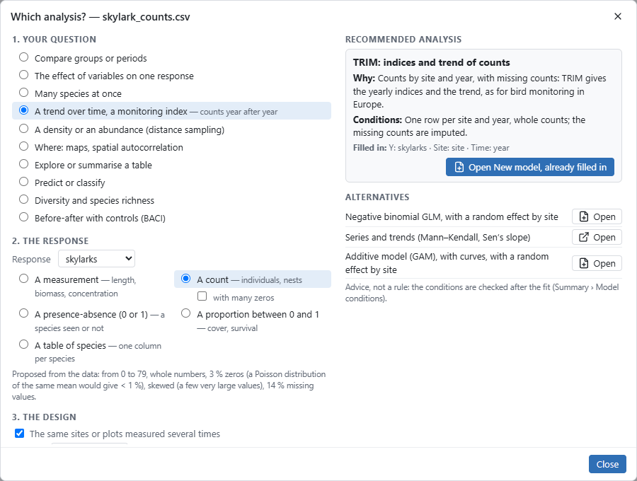

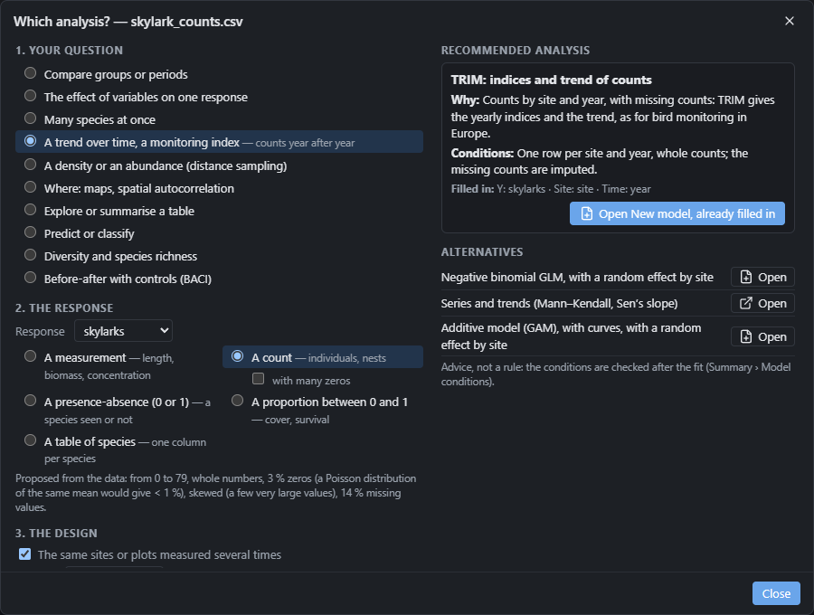
TRIM is the method of common bird monitoring in Europe (Statistics Netherlands): it estimates each year's index and the trend from incomplete counts, the missing counts being imputed by the model. Click Open New model, already filled in.
2. The TRIM model
The General tab is filled in: the site, the time, model 3 (an effect of each year), overdispersion and serial correlation ticked, as the TRIM manual recommends.

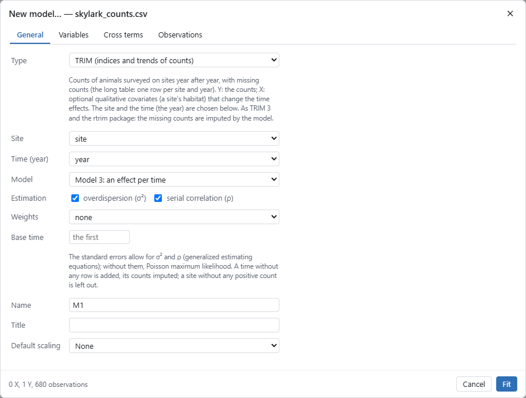

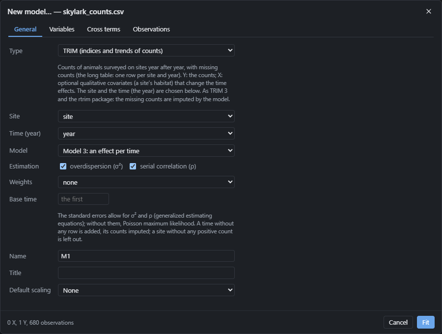
Click Fit.
3. The overall slope and its class

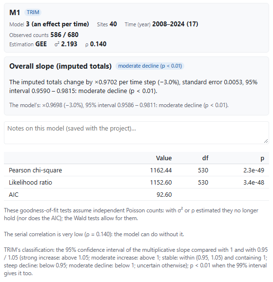

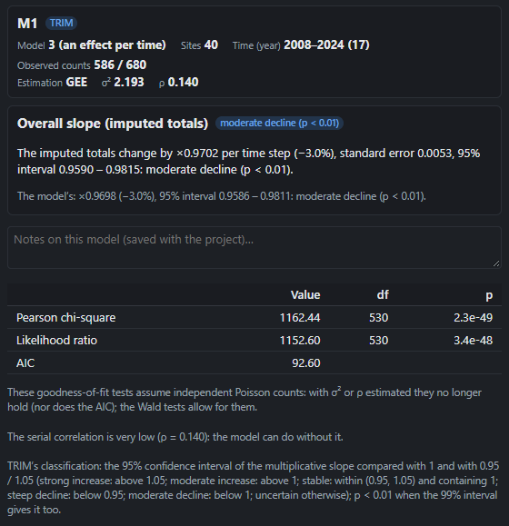
The Summary first gives the model: 586 observed counts out of 680 site × year cells, the others imputed; an overdispersion σ² = 2.19 (the counts vary twice as much as a Poisson distribution would have them) and a serial correlation ρ = 0.14 between two years of a site, low, as the Summary notes.
Then the overall slope of the imputed totals: × 0.9702 a year, that is −3.0% a year [95% CI 0.9590, 0.9815]. Its class, by TRIM's rules: moderate decline (p < 0.01). TRIM compares the slope's interval with 1 and 0.95: entirely below 1, but not below 0.95, it is a moderate decline; below 0.95, it would be a steep decline.
The goodness-of-fit tests (Pearson chi-square, likelihood ratio) assume independent Poisson counts: with σ² and ρ estimated they no longer hold, as the Summary says; the Wald tests account for them.
4. The indices
The Indices view: each year relative to the first (2008 = 1), with the 95% band. Tick overall slope line.

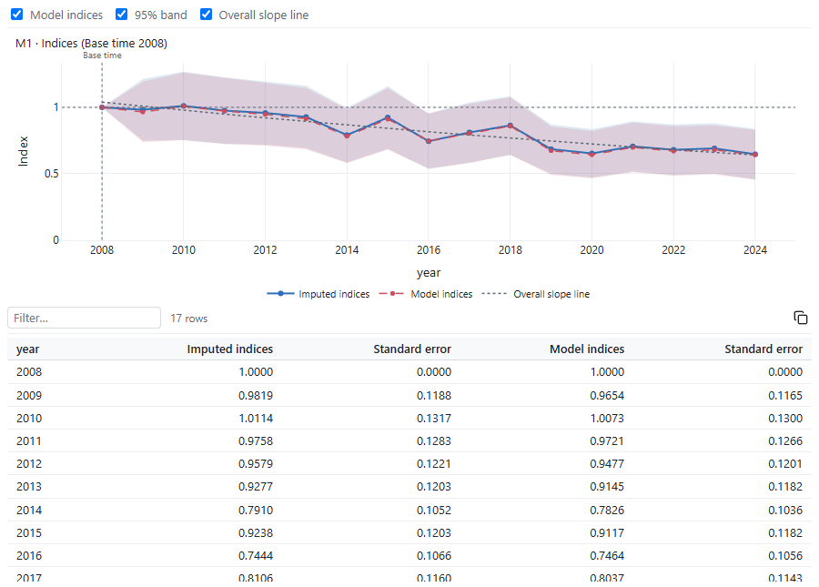

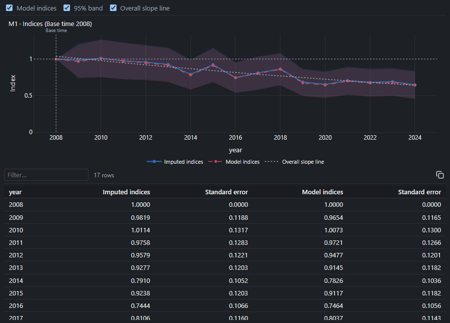
The imputed index goes from 1 in 2008 to 0.65 in 2024: a third fewer skylarks between these two years. The table under the plot gives each index and its standard error; Ctrl+C copies it for a spreadsheet.
5. The density in 2024: distance sampling
Open skylark_transects.csv, choose this project in the
explorer, then Model › Which analysis?: A density or an abundance (distance sampling). Nuée
proposes distance as the response and lines (line transects), and fills in the transect, the
effort, the area and the group size from the columns' names.

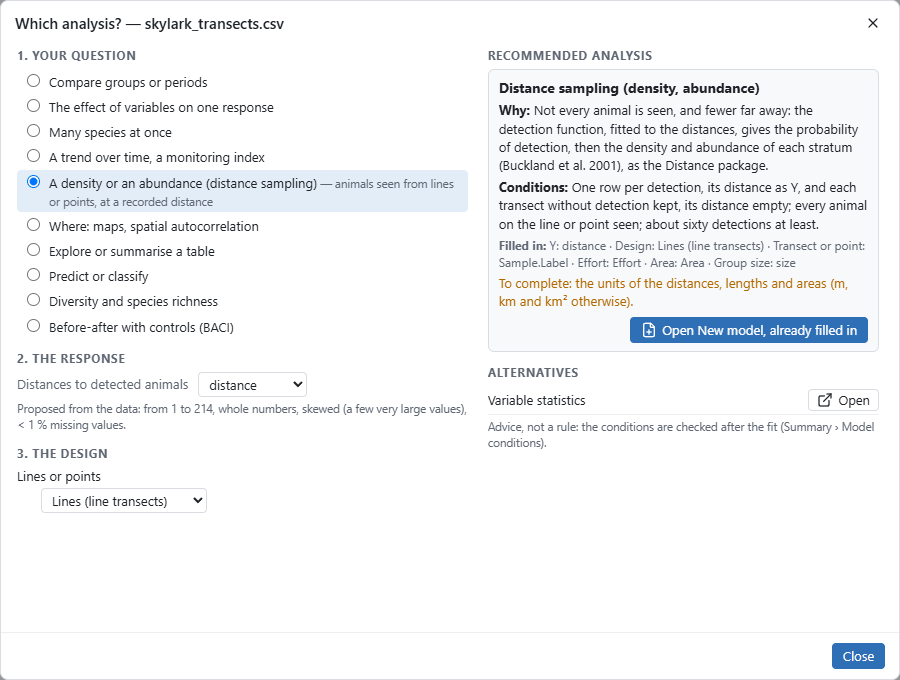

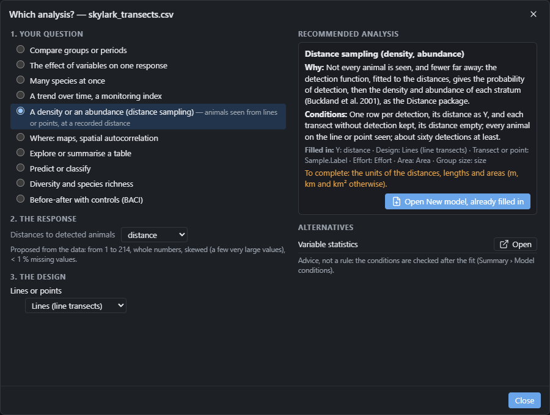
Not every bird is seen, and fewer of those far from the line: the detection function, fitted to the distances, gives the probability of detection, then the density. Click Open New model, already filled in.
On the General tab, check the units: distances in m, lengths in km, areas in km². Choose a truncation of 5% (of the largest distances): the few farthest detections, rare and poorly described, leave the model, as is usual. The half-normal key and the cosine adjustment terms chosen by AIC are the defaults, those of the Distance package's ds() function.

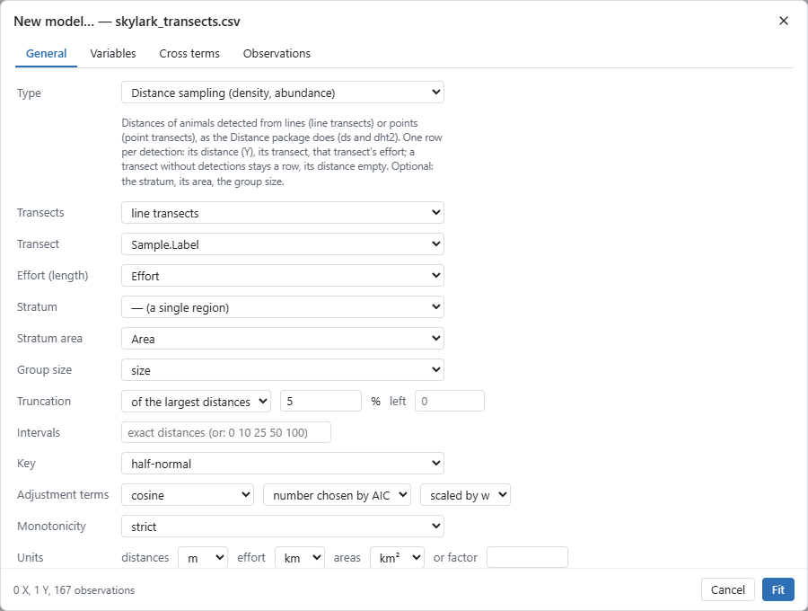

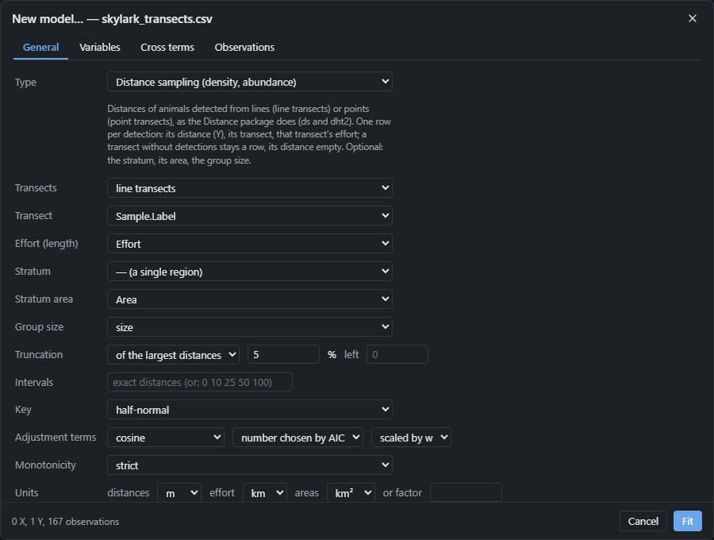
6. The detection function

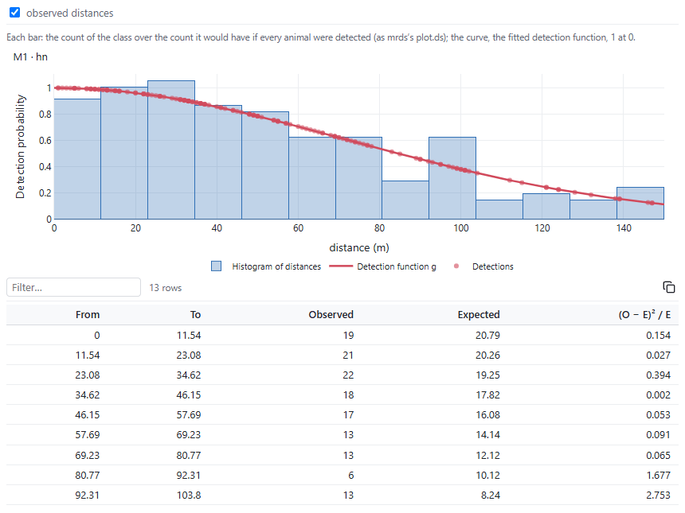

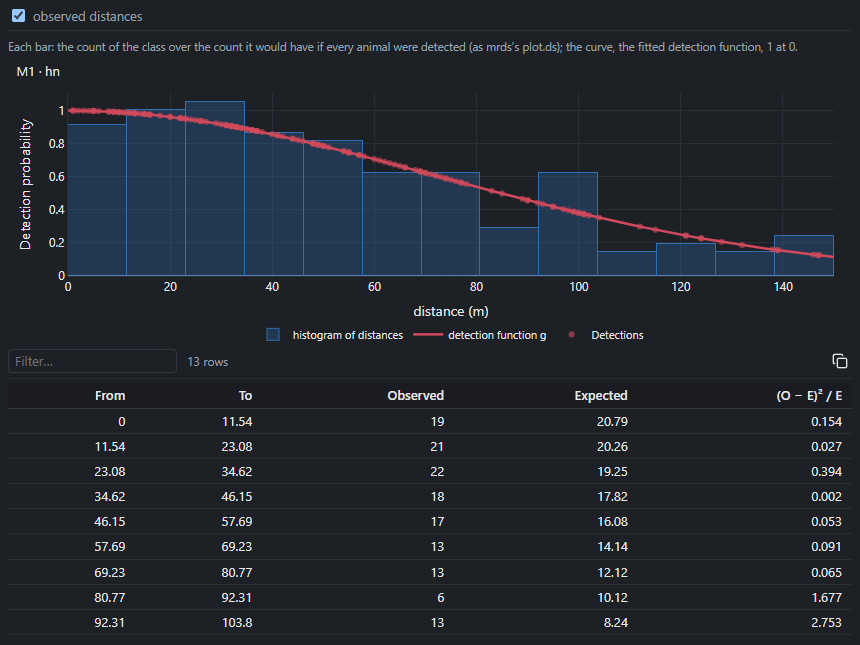
The histogram of the distances (each bar the class's count over the count it would have if every bird were seen) follows the curve: nearly every bird is seen near the line, a small share at 150 m. The AIC kept the half-normal key alone (a cosine term didn't lower it). The goodness-of-fit tests (Cramér–von Mises, chi-square) show no departure.
7. Density and abundance

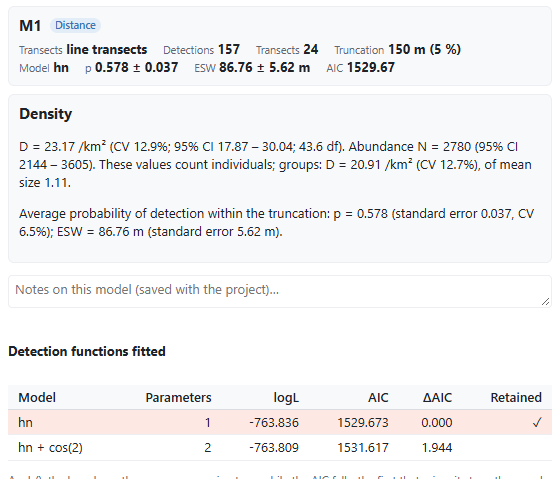

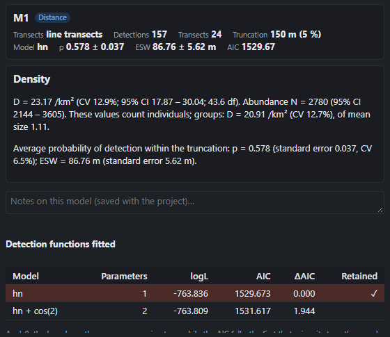
157 detections on 24 transects (43.3 km), up to 150 m. The average probability of detection within the strip is p = 0.58, that is an effective strip half-width of 87 m: as many birds are counted as if all those within 87 m were seen, and none beyond.
The density is 23.2 skylarks per km² (CV 12.9%; 95% CI 17.9 to 30.0), that is an abundance of 2780 birds (2144 to 3605) over the 120 km². The Density and abundance view details the calculation, and the share of the variance due to the encounter rate between transects (72%), to detection and to group size.
8. A figure for the report
Go back to the counts project. TRIM's Indices and Time totals views are open (otherwise, double-click them under the model in the explorer). Plots › Compose a figure… opens a figure; Add an open plot… puts one then the other in it, as A and B.

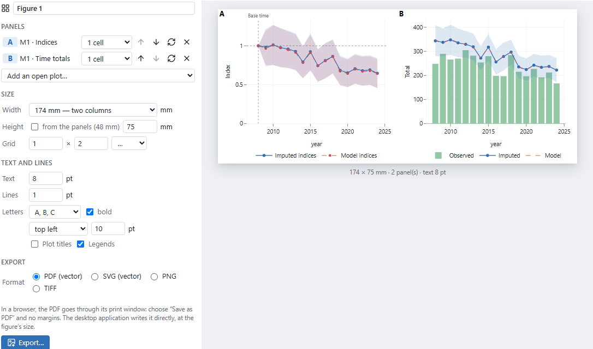

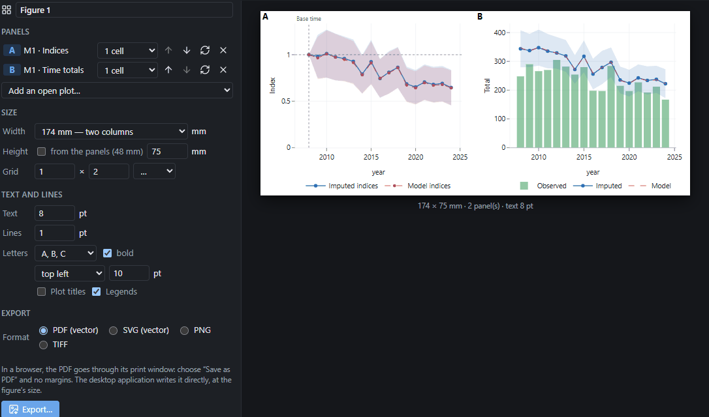
Choose a journal's width (174 mm, two columns), a height (untick from the panels, then 75 mm), the text's size once printed (8 pt), then Export… as vector PDF or SVG, or as PNG and TIFF at 300 or 600 dots per inch. The figure is kept in the project and always takes each model's latest fit: after refitting, export it again.
The Methods text
For TRIM, Model › Text for the Methods section writes, among other things:
The indices are the totals of each time (imputed: the observed counts and, for the missing ones, the model's) relative to that of 2008, with their standard errors by the delta method. The overall slope of the imputed totals (that of the least-squares line through their logarithm) is 0.9702 per time step (standard error 0.0053; 95% CI 0.9590–0.9815, t distribution with 15 degrees of freedom), that is −3.0% per step: moderate decline, by TRIM's classification (the slope's confidence interval compared with 1, 0.95 and 1.05), p < 0.001.
and for the transects:
The density: D = 23.17 per km² (standard error 3, CV 12.9%; 95% CI 17.87–30.04; 43.6 df), that is an abundance N = 2780 (95% CI 2144–3605) over 120 km².
Going further
- A covariate in TRIM (the habitat, as X) lets the time effects vary from one category to the other; model 2 estimates a linear trend, with changepoints chosen or stepwise.
- Plots › Series draws each site's counts over the years, with Mann–Kendall trend tests and Sen's slopes.
- For point counts rather than lines, choose point transects in the model.
- The guide: series, TRIM and distance sampling, figures for publication.